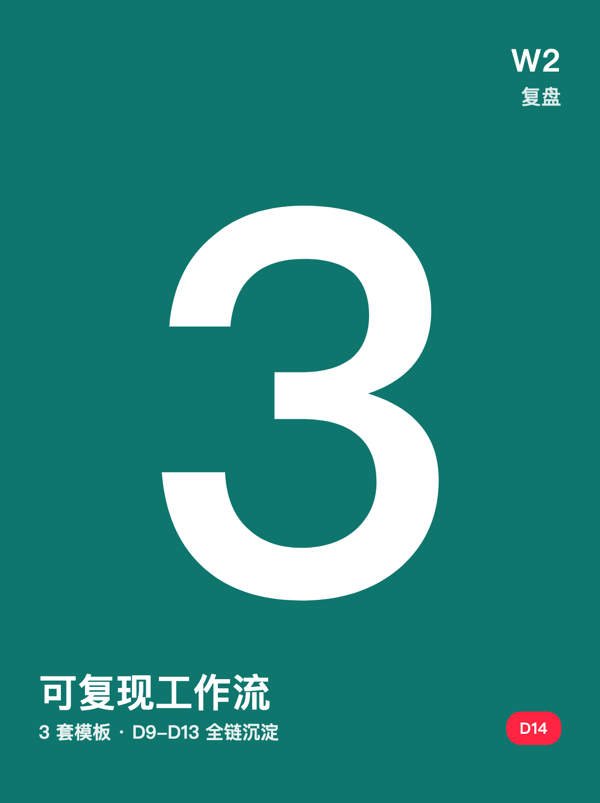
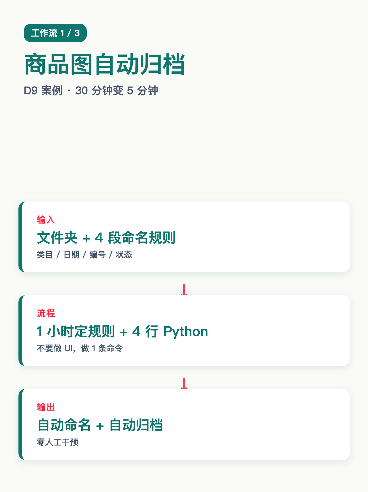
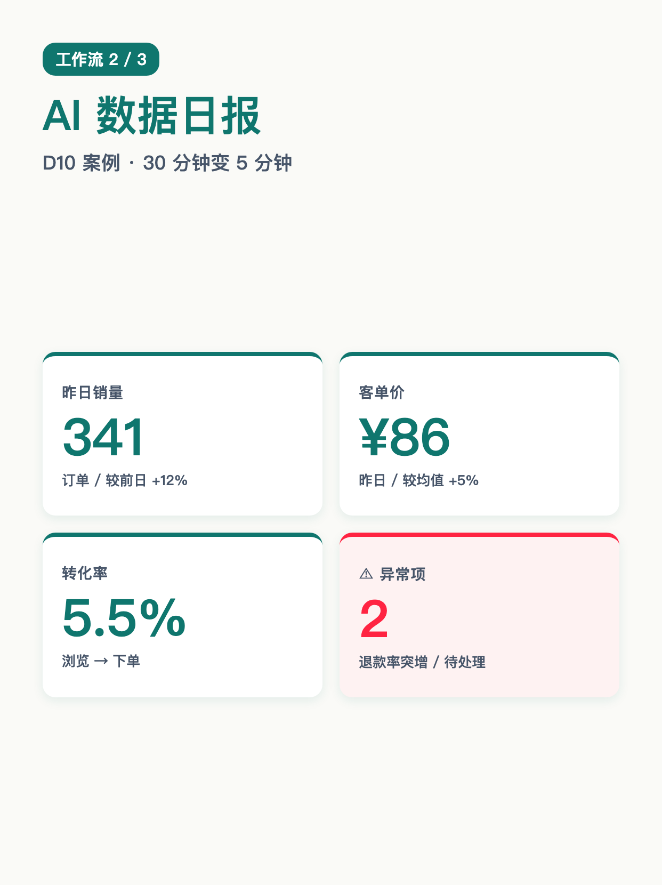
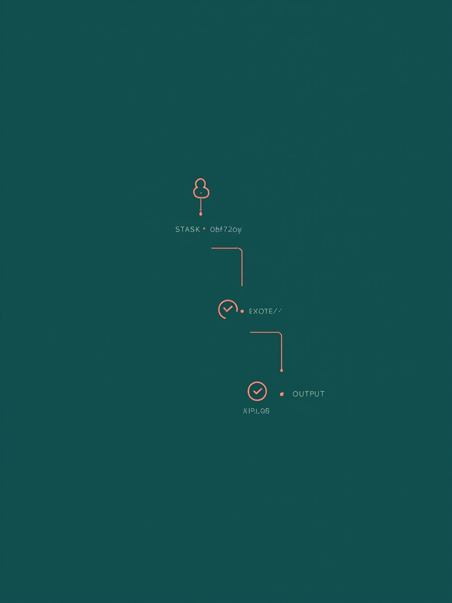
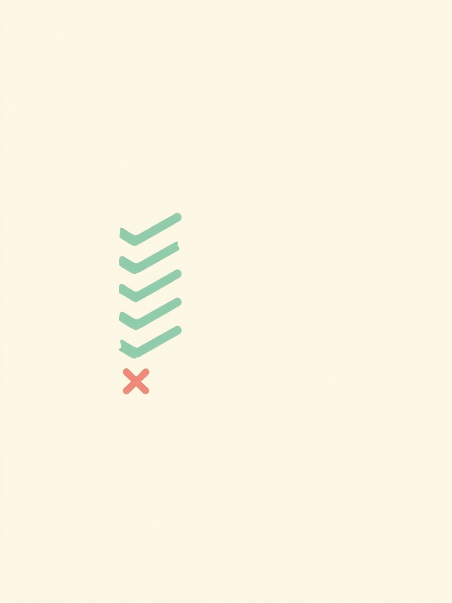
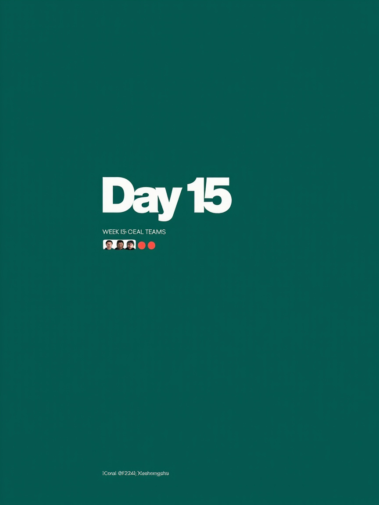

使用说明:所有内容已按发布标准预排好,发布前请用最下方 3 个复制按钮。
6 张图按顺序上传,标题"W2 复盘 · 3 套工作流沉淀"(XHS 上限 20 字 ✓)。






W2 复盘 · 3 套工作流沉淀
W2 收官。这周跑了 3 套工作流,沉淀成"输入 → 流程 → 输出"清单。 不是工具横评,是真能复制的步骤。 ────── 工作流 1:商品图自动归档 ────── (D9 案例) · 输入:文件夹 + 4 段命名规则(类目/日期/编号/状态) · 流程:1 小时定规则 + 4 行 Python 脚本 · 输出:自动命名 + 自动归档 · 关键:不要做 UI,做 1 条命令 ────── 工作流 2:AI 数据日报 ────── (D10 案例) · 输入:昨天销售 CSV + 4 行提示词 · 流程:Kimi API 调用一次 + 模板渲染 · 输出:昨天发生了什么 / 异常项 / 改进动作 · 关键:把"看数据"变成"读日报" ────── 工作流 3:Python 串 Kimi API ────── (D11/D12 案例) · 输入:任务描述 + 6 行核心代码 · 流程:本地脚本 + API 串起来(Kimi/DeepSeek/GPT) · 输出:批量化任务跑通,工具横评有结论 · 关键:6 行代码 < 100 行工具 UI ────── 怎么判断"可复现" ────── ✅ 输入明确(资料/数据/任务) ✅ 流程 ≤ 7 步,每步 ≤ 10 分钟 ✅ 输出能直接用(不用再加工) ✅ 任何人都能照着跑(不靠经验) ❌ 流程靠"经验判断" = 不可复现 ────── W2 沉淀一句话 ────── 工具横评 = 数据党爱看,路人划走。 真工作流 = 输入清楚 + 流程固定 + 输出可用。 能让你"少干活"的,不是工具,是工作流。 ────── W3 预告 ────── 主题:证据与案例积累 D15 起连更 3 个真实小团队用 AI 工作流省 10h/周的故事。 评论扣 1:你最想看哪类团队的案例?👇 关注我,看 30 天跑完我会得出什么结论 🌱
#前端转AI电商
#W2复盘
#工作流沉淀
#可复现
#程序员转电商
♡ 收藏
💬 评论
↗ 分享
📋 一键复制
📊 D14 数据复盘
复盘结构: 3 套工作流 × 4 段拆解(输入/流程/输出/关键) + 可复现 4 条标准 + W2 沉淀一句话 + W3 预告 = W2 收官五段式
3 套工作流: 商品图归档(D9)+ AI 数据日报(D10)+ Python 串 Kimi API(D11/D12)—— 把 W2 跑通的全列出来
可复现 4 标: 输入明确 / 流程 ≤ 7 步 / 输出直接用 / 任何人都能跑 —— 经验判断 = 不可复现
承接 W2: D8(客服库 TODO)/D9(图片)+D10(数据)+D11/D12(API)+D13(思维) → D14 立"W2 收官沉淀"
互动钩子: 评论扣 1 + W3 案例投票 —— 把"周收官"转成"下周开篇预约"
🚀 发布前 15 分钟 SOP
- 打开小红书 App → 创建笔记
- 选 6 张图(封面 1 + 内页 5),按顺序排好(配图待补,见顶部橙色提示)
- 选 3:4 竖图
- 标题:W2 复盘 · 3 套工作流沉淀
- 正文:点"复制正文"按钮粘贴
- 加 5 个标签
- 选发布时间:周日 20:00-21:00(W2 收官 + 周末复盘天然高曝光)
- 发布
📈 发布后 24 小时 SOP
| 时间 | 动作 | 目标 |
|---|---|---|
| 10 分钟 | 自己评论扣 1("W3 你最想看哪类团队的案例?+ 二选一") | 激活引导型评论区 |
| 30 分钟 | 每条评论都认真回复(尤其选"想看 XX 团队"的追问 1-2 句) | 评论区密度提升推荐 |
| 2 小时 | 截图保存 W2 收官数据 | W3 开篇素材 |
| 6 小时 | 看一次数据(曝光/收藏/评论/案例投票分布) | 判断是否二次推 |
| 24 小时 | 统计评论里"想看的团队"类型,准备 D15 案例稿 | W3 开篇方向 |
🎯 Day 14 数据目标
| 指标 | 目标 | 备注 |
|---|---|---|
| 曝光 | ≥ 1500 | W2 收官 + 周末复盘天然高曝光 |
| 收藏率 | ≥ 8% | 工作流清单天然高收藏(留底用) |
| 评论 | ≥ 150 | W2 收官投票 + 周末情绪共鸣 |
| 涨粉 | ≥ 180 | W2 末段冲一波,沉淀私域 |
| D15 钩子 | 按 W3 案例投票决定 | W3 开篇方向由 D14 评论区投票决定 |
💡 关键设计点
1. 标题 = 节点 + 数字 + 沉淀关键词
- "W2 复盘" = 系列节点(用户知道"这是个连载")
- "3 套工作流沉淀" = 数字冲击 + 干货承诺(暗示文章结构)
- 字数 12 字,XHS 上限 20 ✓
2. 正文 = 4 段式 + W3 钩子
- 3 套工作流拆解(每套输入/流程/输出/关键,D9-D12 引用)
- 可复现 4 标(4 行绿勾 + 1 行红叉,决策清单)
- W2 沉淀一句话(工具横评 vs 真工作流,观点反差)
- W3 预告(证据与案例积累,评论扣 1 选团队)
3. 图文对应(配图待补)
- 图 01 = 封面(墨绿底 + "W2 复盘"大字 + 红色"3"数字 + 副标"3 套工作流沉淀")
- 图 02 = 工作流 1:商品图自动归档(输入/流程/输出流程图)
- 图 03 = 工作流 2:AI 数据日报(表格+警示色,4 项指标)
- 图 04 = 工作流 3:Python 串 Kimi API(API 调用流程图)
- 图 05 = 可复现 4 标(决策清单,4 行绿勾 + 1 行红叉)
- 图 06 = Day15 预告(墨绿底大字"Day 15 · W3 开篇"+ 副标"3 个真实小团队案例")
4. 承接 W2 收官
- D8 客服库(TODO) → D9 商品图归档 → D10 数据日报 → D11/D12 API 工作流 → D13 工作流思维 → D14 沉淀
- 钩子升级:D7 投 A/B/C 选 W2 方向 → D13 二选一立场投票 → D14 选 W3 团队案例(连续 3 周"投票 → 开篇"节奏)
- D14 是 W2 收官日,W3 案例投票决定 D15 选题 = 数据驱动下一天
⚠️ 注意事项
- 3 套工作流要列全—— 用户按这个数投票,错了会被打回
- 可复现 4 标必须按顺序—— 输入明确 → 流程固定 → 输出可用 → 任何人都能跑(经验判断 = 不可复现)
- "W3 你最想看哪类团队"的承诺要兑现—— D15 / D16 / D17 必须对应公开
- 正文用"我"视角而非"你"—— 复盘类笔记第一人称更易拉近距离
- 6 张图必须按顺序—— 封面(钩子)→ 工作流 1(图片)→ 工作流 2(数据)→ 工作流 3(API)→ 可复现 4 标(收官)→ Day15 预告(W3 开篇)
- 正文里 ✅ 用墨绿 #0f766e,❌ 用小红书红 #ff2442—— 颜色编码贯穿(可复现 = 绿,不可复现 = 红)
- 配图待补—— mavis CLI 异常,本次 cron 跑不出图。等 daemon/MCP 恢复后用 matrix_generate_image 补 6 张 3:4 图到
content-kit/D14-笔记/